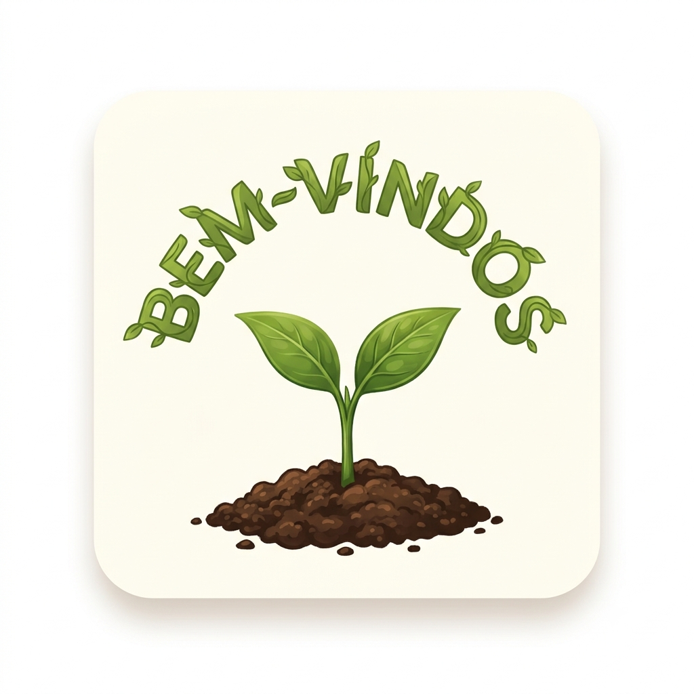
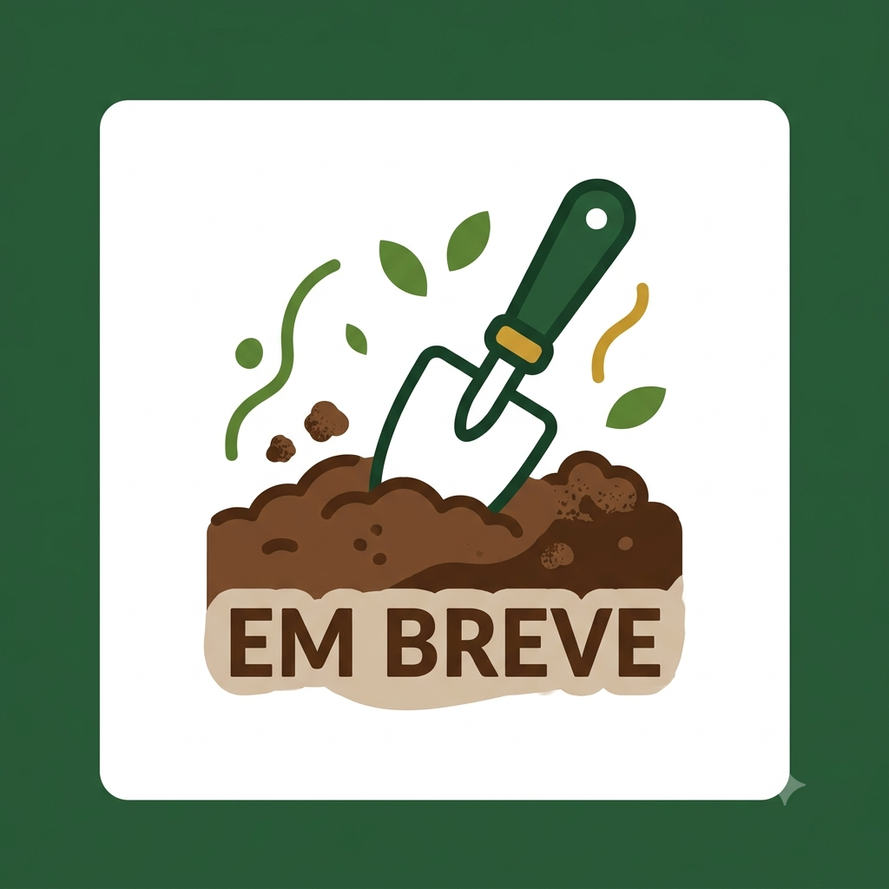

Bem-vindos ao nosso Diário Verde!
Por: [Seu Nome Aqui]
Boas-vindas ao blog oficial da horta do 1D! Aqui vamos compartilhar nossa evolução na terra, técnicas de plantio e links para os blogs individuais de cada aluno do grupo.
Acompanhe a nossa jornada verde no Colégio CQC e veja os links dos blogs dos alunos!

Por: [Seu Nome Aqui]
Boas-vindas ao blog oficial da horta do 1D! Aqui vamos compartilhar nossa evolução na terra, técnicas de plantio e links para os blogs individuais de cada aluno do grupo.

Por: [Seu Nome Aqui]
No nosso primeiro dia oficial na horta, fomos ao espaço externo do Colégio CQC para fazer a demarcação. Usamos estacas e barbantes para medir o tamanho exato dos canteiros onde logo mais teremos vegetais fresquinhos!
Links dos Alunos: Blog do Grupo 1 | Blog do Grupo 2

Por: [Seu Nome Aqui]
Em breve: Vamos contar como foi revirar a terra, retirar as pedras e adicionar o adubo orgânico para deixar o solo perfeito para as sementes.
Por: [Seu Nome Aqui]
Em breve: Alface, cenoura ou temperos? Neste post vamos revelar quais sementes e mudas escolhemos para começar a nossa produção.
Por: [Seu Nome Aqui]
Em breve: Uma horta exige dedicação. Vamos compartilhar a escala de rega do 1D e como estamos cuidando para evitar pragas de forma natural.
Por: [Seu Nome Aqui]
Em breve: O momento mais esperado por todos no CQC! Acompanhe o dia em que vamos colher o fruto do nosso trabalho direto para o prato.